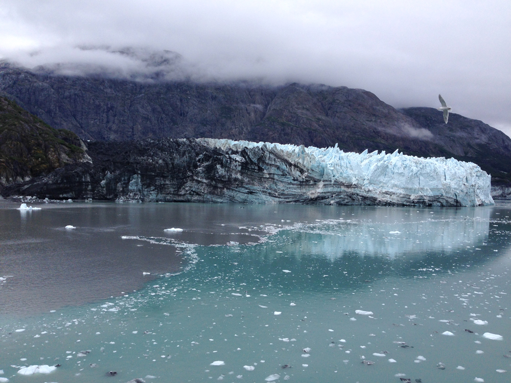
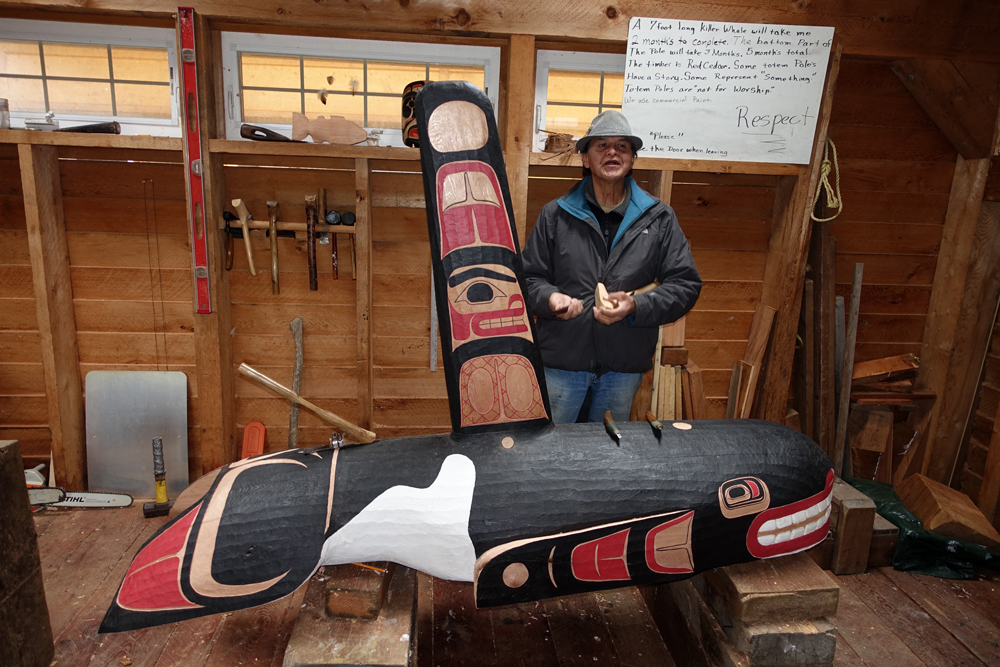

July 2015
Alaska

View of Ketchikan, Alaska from our cruise ship. There were water planes everywhere in Alaska.

This is one of the many beautiful glaciers we saw in Glacier Bay National Park, Alaska. We were even lucky enough to see a large chunk of ice fall into the water. This is called glacier calving.

This native american man was kind enough to share with us the tools and tricks to carving a totem pole. The sign behind him reads “A 7 foot long killer whale will take me 2 months to complete. The bottom part of the pole will take 3 months … 5 months total. The timber is red cedar. Some totem poles have a story. Some represent “something.” Totem poles are “not for worship.” We use commercial house paint. “RESPECT” is underlined and in big letters.